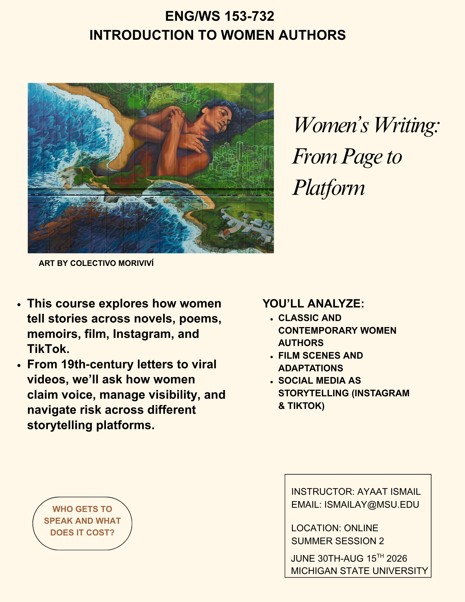

Teaching · Learning · Resistance
"The classroom is a site of witness — a space where knowledge is not transferred, but built together, with care and accountability."
Teaching Philosophy
My teaching is rooted in feminist, anti-racist, and student-centered pedagogies. I design courses that foreground critical thinking, creativity, and collaborative inquiry, centering digital humanities, film, and global studies as tools for understanding power, representation, and resistance. The classroom, for me, is a space for students to develop skills for both academic and public scholarship while honoring the knowledge they already carry.
Making visible what dominant archives suppress, centering marginalized voices as primary epistemological sources.
Film and visual media as sites of resistance, reading images against the grain of colonial documentation.
Mapping as a political act, challenging borders drawn by occupation and reimagining space through community knowledge.
Steadfastness as method, teaching students to write as an act of presence, persistence, and refusal to disappear.
Classroom
An exploration of literary works by women writers across genres, periods, and geographies, centering voices long excluded from the Western canon. Students engage with feminist close reading, intersectional theory, and collaborative discussion.
A foundational course in Women's and Gender Studies, tracing how gender, race, class, and sexuality intersect to shape social life. Students develop analytical frameworks for feminist inquiry across disciplines.
Examines the entanglement of race and film, how cinema has historically constructed racial hierarchies, and how filmmakers of color have worked within and against those conventions. Taught under Professor Jeffrey Wray.
Surveys African American literary traditions from the slave narrative through contemporary fiction and poetry, emphasizing the relationship between form, voice, and political witness.
Taught composition as a site of inquiry, students wrote about community, social identity, and argument through research, with an emphasis on the essay as a form of public thought.
Areas of Practice
In Practice
Courses are designed as living documents, assignments, readings, and discussion structures evolve in response to student needs and current events. This flyer reflects one approach to making course goals visible and accessible to students from the first day.
